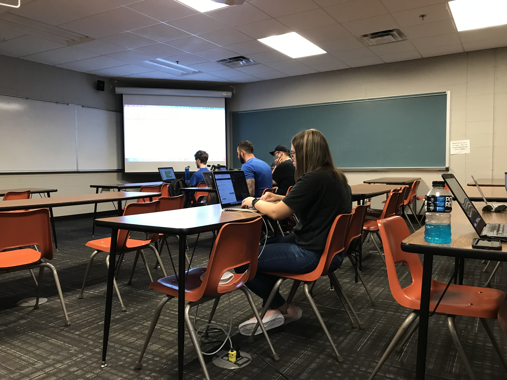

What is being a Computer Science major like?
The following are quotes from students at Oklahoma Christian University on what it's like to be a computer science major:
"In computer science, I'm dealing a lot more with software as opposed to circuitry. I do it at my job, so I now have a better understanding of it." - Tyler Barbee, Grad student
"It's like walking into a dark room and figuring out how to Google how to turn on the light." - Jessica Longley, Senior
"It's very challenging but rewarding." - Logan Demaray, Junior
"It’s fun to create a program and understand how the stuff you use everyday works —- websites, games, etc. But it’s challenging to understand it." - Nathan Lalli, Junior
"It's fine." - Jackson Tate, Junior
"It presents more opportunities than other majors, and you can create lifelong friendships with other students and professors alike." - Alexandria Hendryx, Sophomore
"I’m glad that I can combine creativity and STEM together." - Arrian Taton, Freshman
"It’s hard at first but it’s an eye opening experience. It helps you learn things and become a problem solver." - Laura Nsenga, Freshman
"It allows me to learn problem solving skills I'll use in the future." - Johnathon Cortez, Freshman
Here are some students having fun in class: 